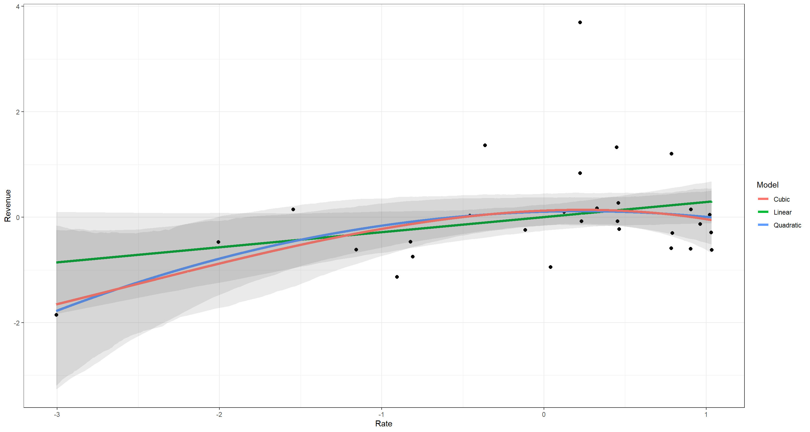
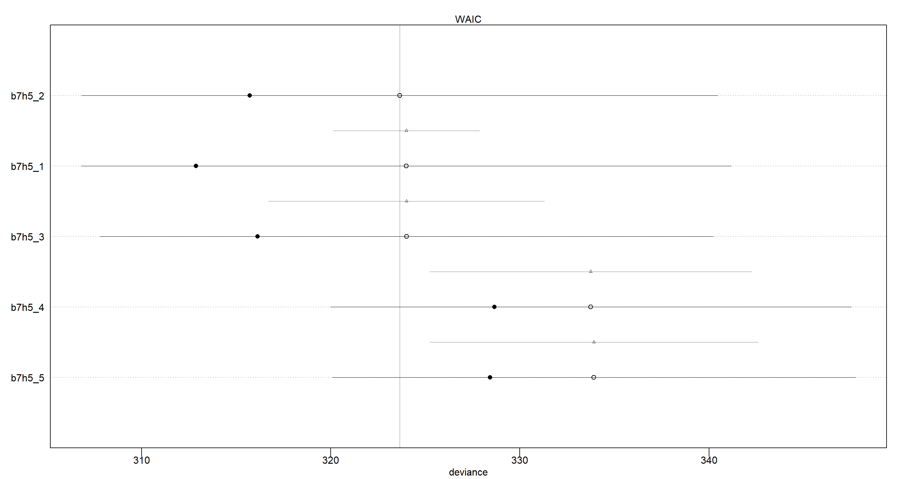

Chapter 07
Ulysses' Compass
Material
Introduction
These are answers and solutions to the exercises at the end of chapter 7 in Satistical Rethinking 2 by Richard McElreath. I have created these notes as a part of my ongoing involvement in the AU Bayes Study Group. Much of my inspiration for these solutions, where necessary, has been obtained from Jeffrey Girard.
R Environment
For today’s exercise, I load the following packages:
library(rethinking)
library(ggplot2)
Easy Exercises
Practice E1
Question: State the three motivating criteria that define information entropy. Try to express each in your own words.
Answer: The principle of information theory is motivated by the three following criteria:
- Continuity. Uncertainty must be measured on a continuous scale of equal intervals to ensure comparability.
- Additivity. Total uncertainty is derived by adding up the uncertainties associated with each prediction.
- Scalability. Uncertainty scales with number of possible outcomes to reflect changes in certainty just by virtue of different numbers of possible outcomes.
Practice E2
Question: Suppose a coin is weighted such that, when it is tossed and lands on a table, it comes up heads 70% of the time. What is the entropy of this coin?
Answer: Following the formula 7.1 on page 210:
$H(p)=−\sum_{i=1}^n p_ilog(p_i) = −(p_Hlog(p_H)+p_Tlog(p_T))$
with $p_H$ being probability of heads, and $p_T$ being probability of tails, we can simply plug in our values as follows:
p <- c(0.7, 0.3)
-sum(p * log(p))
## [1] 0.6108643
Thus, the entropy is 0.61.
Practice E3
Question: Suppose a four-sided die is loaded such that, when tossed onto a table, it shows “1” 20%, “2” 25%, “3” 25%, and “4” 30% of the time. What is the entropy of this die?
Answer: Again, we use the formula approach as above:
p <- c(0.2, 0.25, 0.25, 0.3)
-sum(p * log(p))
## [1] 1.376227
The entropy of our D4 is 1.38.
Practice E4
Question: Suppose another four-sided die is loaded such that it never shows “4”. The other three sides show equally often. What is the entropy of this die?
Answer: By knowing that one side never shows up, we can omit it altogether and are now looking at a perfectly balanced D3 rather than a D4:
p <- c(1 / 3, 1 / 3, 1 / 3)
-sum(p * log(p))
## [1] 1.098612
I have never seen a D3 in real-life, but we could easily imagine a D6 where the numbers 1 through 3 show up twice each. The entropy of our D3 is 1.1.
Medium Exercises
Practice M1
Question: Write down and compare the definitions of AIC, and WAIC. Which of these criteria is most general? Which assumptions are required to transform a more general criterion into a less general one?
Answer:
- AIC $= D_{train}+2p$; ($D_{train} =$ in-sample deviance, $p =$ number of parameters estimated in the model). It is built on the assumptions that:
A) Priors are flat or overwhelmed by model
B) Posterior distribution is approximately multivariate Gaussian
C) Sample size $»$ Number of parameters - WAIC $= −2(lppd −\sum_i(var_θ log p(y_i|θ))$; ($y_i =$ observation $i$, $θ =$ posterior distribution, $lppd(y, Θ) =\sum_ilog\frac{1}{S} \sum_Sp(y_i|Θ_s) =$ log-pointwise-predictive-density) . It is built on the assumptions that: Sample size $»$ Number of parameters.
WAIC is clearly the more general method here as it comes with less assumptions. To transform WAIC into AIC, we need to assume A. and B. of the assumptions of AIC.
Practice M2
Question: Explain the difference between model selection and model comparison. What information is lost under model selection?
Answer: Model selection and model comparison both use information criteria and/or cross-validation exercises to determine goddess of fit of models to data set (their explanatory power) as well as their accuracy in terms of making inferences (their predictive power). Where they differ is what these approaches do with the models at hand once the desired information is obtained. In model selection all but the “best” model is discarded, whereas under model comparison we use our new-found information to identify relative model accuracy to assess the influences of different parameters in different models. The latter can lead to understanding causal relationships and identification of confounds in the different models.
Practice M3
Question: When comparing models with an information criterion, why must all models be fit to exactly the same observations? What would happen to the information criterion values, if the models were fit to different numbers of observations? Perform some experiments, if you are not sure.
Answer: Information criteria are based on deviance. Deviance, in turn, is a sum and not a mean product of all observations. All else being equal, a model with more observations returns a higher deviance and thus worse accuracy according to information criteria.
Practice M4
Question: What happens to the effective number of parameters, as measured by PSIS or WAIC, as a prior becomes more concentrated? Why? Perform some experiments, if you are not sure.
Answer: The effective number of parameters (or "pWAIC" in the WAIC() function output), is the penalty term of our regularisation approaches. As priors become more regularising (i.e. more concentrated on certain prior knowledge or assumptions), the effective number of parameters decreases.
In the case of WAIC, $p_{WAIC}$ is the variance in the log-likelihoods for each observation in the training data. More concentrated priors constrain this likelihood and subsequent measure of variance, thus reducing it.
As for PSIS, $P_D$ (effective number of parameters) tells us about the flexibility of the model. Increasingly regularised priors decrease the flexibility of the model.
Practice M5
Question: Provide an informal explanation of why informative priors reduce overfitting.
Answer: Informative priors constrain the model by making it harder for the model to pick up on extreme parameter values and assign them high posterior probabilities.
Practice M6
Question: Provide an informal explanation of why overly informative priors result in underfitting.
Answer: Informative priors can constrain a model so much that it becomes impossible for the model to change the prior distribution into an accurate posterior distribution given the data. This can especially problematic when we use informative priors that are born under false premises, stem from bad intuition, or are just plain stupid.
Hard Exercises
Practice H1
 Question: In 2007, The Wall Street Journal published an editorial (“We’re Number One, Alas”) with a graph of corporate tax rates in 29 countries plotted against tax Revenue. A badly fit curve was drawn in (reconstructed to the right), seemingly by hand, to make the argument that the relationship between tax rate and tax Revenue increases and then declines, such that higher tax rates can actually produce less tax Revenue. I want you to actually fit a curve to these data, found in
Question: In 2007, The Wall Street Journal published an editorial (“We’re Number One, Alas”) with a graph of corporate tax rates in 29 countries plotted against tax Revenue. A badly fit curve was drawn in (reconstructed to the right), seemingly by hand, to make the argument that the relationship between tax rate and tax Revenue increases and then declines, such that higher tax rates can actually produce less tax Revenue. I want you to actually fit a curve to these data, found in data(Laffer). Consider models that use tax rate to predict tax Revenue. Compare, using WAIC or PSIS, a straight-line model to any curved models you like. What do you conclude about the relationship between tax rate and tax Revenue?
Answer: First, I begin by loading the data and standardising my variables:
# data preparation
data(Laffer)
d <- Laffer
d$Rate <- standardize(d$tax_rate)
d$Revenue <- standardize(d$tax_revenue)
With this preparation out of the way, I am ready to run three models: Linear, Quadratic, and Cubic. I could run many more than these, but I wager this will be enough.
# linear model
m7H1a <- quap(
alist(
Revenue ~ dnorm(mu, sigma),
mu <- a + b * Rate,
a ~ dnorm(0, 0.2),
b ~ dnorm(0, 0.5),
sigma ~ dexp(1)
),
data = d
)
# quadratic model
m7H1b <- quap(
alist(
Revenue ~ dnorm(mu, sigma),
mu <- a + b * Rate + b2 * Rate^2,
a ~ dnorm(0, 0.2),
c(b, b2) ~ dnorm(0, 0.5),
sigma ~ dexp(1)
),
data = d
)
# cubic model
m7H1c <- quap(
alist(
Revenue ~ dnorm(mu, sigma),
mu <- a + b * Rate + b2 * Rate^2 + b3 * Rate^3,
a ~ dnorm(0, 0.2),
c(b, b2, b3) ~ dnorm(0, 0.5),
sigma ~ dexp(1)
),
data = d
)
# Comparing Models
comparison <- compare(m7H1a, m7H1b, m7H1c)
comparison
## WAIC SE dWAIC dSE pWAIC weight
## m7H1a 87.98410 21.63416 0.0000000 NA 5.528420 0.4448646
## m7H1b 88.79927 24.58351 0.8151711 3.382774 6.990224 0.2959482
## m7H1c 89.06454 24.19943 1.0804389 3.089764 7.070477 0.2591872
According to these WAIC values and their Standard Deviations, I cannot make a clear statement as to which relationship between tax rate and tax revenue should be assumed.
Let me plot these to make a clearer image of what I mean:
## base sequence for predictions
plot_df <- data.frame(Rate = seq(from = min(d$Rate), to = max(d$Rate), length.out = 1e4))
## Predictions for Linear Model
plot_df$m7H1a <- apply(link(m7H1a, data = plot_df), 2, mean)
plot_df$m7H1aLower <- apply(link(m7H1a, data = plot_df), 2, PI, prob = .95)[1, ]
plot_df$m7H1aUpper <- apply(link(m7H1a, data = plot_df), 2, PI, prob = .95)[2, ]
## Predictions for Quadratic Model
plot_df$m7H1b <- apply(link(m7H1b, data = plot_df), 2, mean)
plot_df$m7H1bLower <- apply(link(m7H1b, data = plot_df), 2, PI, prob = .95)[1, ]
plot_df$m7H1bUpper <- apply(link(m7H1b, data = plot_df), 2, PI, prob = .95)[2, ]
## Predictions for Cubic Model
plot_df$m7H1c <- apply(link(m7H1c, data = plot_df), 2, mean)
plot_df$m7H1cLower <- apply(link(m7H1c, data = plot_df), 2, PI, prob = .95)[1, ]
plot_df$m7H1cUpper <- apply(link(m7H1c, data = plot_df), 2, PI, prob = .95)[2, ]
## Plotting
ggplot(plot_df) +
geom_point(data = d, aes(x = Rate, y = Revenue), size = 2) +
geom_line(data = plot_df, aes(y = m7H1a, x = Rate, colour = "Linear"), size = 1.5) +
geom_ribbon(data = plot_df, aes(ymin = m7H1aLower, ymax = m7H1aUpper, x = Rate), alpha = .1) +
geom_line(data = plot_df, aes(y = m7H1b, x = Rate, colour = "Quadratic"), size = 1.5) +
geom_ribbon(data = plot_df, aes(ymin = m7H1bLower, ymax = m7H1bUpper, x = Rate), alpha = .1) +
geom_line(data = plot_df, aes(y = m7H1c, x = Rate, colour = "Cubic"), size = 1.5) +
geom_ribbon(data = plot_df, aes(ymin = m7H1cLower, ymax = m7H1cUpper, x = Rate), alpha = .1) +
theme_bw() +
scale_colour_discrete(name = "Model")

I think this highlights quite well just how little difference there is in how the models understand the data. What the Wall Street Journal did there was (quite unsurprisingly) utter trite.
Practice H2
Question: In the Laffer data, there is one country with a high tax revenue that is an outlier. Use PSIS and WAIC to measure the importance of this outlier in the models you fit in the previous problem. Then use robust regression with a Student’s t distribution to revisit the curve fitting problem. How much does a curved relationship depend upon the outlier point?
Answer: Using the rethinking package, we could identify the outlier by a very high WAIC value in the output of WAIC(..., pointwise = TRUE), where ... represents our model name. From the plot, we already now that our outlier is the country with the highest tax revenue, so let’s remove that one:
# data preparation
data(Laffer)
d <- Laffer
d$Rate <- standardize(d$tax_rate)
d$Revenue <- standardize(d$tax_revenue)
d <- d[d$tax_revenue != max(d$tax_revenue), ] # removing the outlier
With this preparation out of the way, I am ready to run three models again:
# linear model
m7H2a <- quap(
alist(
Revenue ~ dnorm(mu, sigma),
mu <- a + b * Rate,
a ~ dnorm(0, 0.2),
b ~ dnorm(0, 0.5),
sigma ~ dexp(1)
),
data = d
)
# quadratic model
m7H2b <- quap(
alist(
Revenue ~ dnorm(mu, sigma),
mu <- a + b * Rate + b2 * Rate^2,
a ~ dnorm(0, 0.2),
c(b, b2) ~ dnorm(0, 0.5),
sigma ~ dexp(1)
),
data = d
)
# cubic model
m7H2c <- quap(
alist(
Revenue ~ dnorm(mu, sigma),
mu <- a + b * Rate + b2 * Rate^2 + b3 * Rate^3,
a ~ dnorm(0, 0.2),
c(b, b2, b3) ~ dnorm(0, 0.5),
sigma ~ dexp(1)
),
data = d
)
# Comparing Models
comparison <- compare(m7H2a, m7H2b, m7H2c)
comparison
## WAIC SE dWAIC dSE pWAIC weight
## m7H2b 59.61977 9.702003 0.000000 NA 4.010763 0.6272073
## m7H2c 61.37195 9.630274 1.752179 1.215336 4.863606 0.2611742
## m7H2a 63.07215 9.669994 3.452382 4.146202 4.256780 0.1116184
Well, the models still greatly overlap in their usefulness.
Next, let’s use a robust regression. I was unsure whether to revert back to the data which contains the outlier here. I chose to do so:
# Revert back to full data
data(Laffer)
d <- Laffer
d$Rate <- standardize(d$tax_rate)
d$Revenue <- standardize(d$tax_revenue)
# linear model
m7H2aS <- quap(
alist(
Revenue ~ dstudent(2, mu, sigma),
mu <- a + b * Rate,
a ~ dnorm(0, 0.2),
b ~ dnorm(0, 0.5),
sigma ~ dexp(1)
),
data = d
)
# quadratic model
m7H2bS <- quap(
alist(
Revenue ~ dstudent(2, mu, sigma),
mu <- a + b * Rate + b2 * Rate^2,
a ~ dnorm(0, 0.2),
c(b, b2) ~ dnorm(0, 0.5),
sigma ~ dexp(1)
),
data = d
)
# cubic model
m7H2cS <- quap(
alist(
Revenue ~ dstudent(2, mu, sigma),
mu <- a + b * Rate + b2 * Rate^2 + b3 * Rate^3,
a ~ dnorm(0, 0.2),
c(b, b2, b3) ~ dnorm(0, 0.5),
sigma ~ dexp(1)
),
data = d
)
# Comparing Models
comparison <- compare(m7H2aS, m7H2bS, m7H2cS)
comparison
## WAIC SE dWAIC dSE pWAIC weight
## m7H2bS 70.42437 13.97355 0.000000 NA 3.726454 0.69002496
## m7H2cS 72.57488 13.76632 2.150509 1.370840 4.983440 0.23544401
## m7H2aS 74.87539 13.57939 4.451025 4.933044 4.008494 0.07453103
What happened in comparison to our original models (including the outlier)?
comparison <- compare(m7H1a, m7H1b, m7H1c, m7H2a, m7H2b, m7H2c, m7H2aS, m7H2bS, m7H2cS)
comparison
## WAIC SE dWAIC dSE pWAIC weight
## m7H2b 58.70723 9.337612 0.000000 NA 3.548011 6.669909e-01
## m7H2c 61.41111 9.567978 2.703873 1.160931 4.897430 1.725764e-01
## m7H2a 61.59824 9.188906 2.891004 3.943353 3.520610 1.571616e-01
## m7H2bS 70.00986 13.878681 11.302627 10.451899 3.521786 2.343072e-03
## m7H2cS 72.56361 13.867102 13.856375 10.523791 4.983524 6.535011e-04
## m7H2aS 74.30030 13.502465 15.593071 10.302465 3.722951 2.742379e-04
## m7H1b 89.68562 25.603534 30.978388 22.459013 7.469330 1.250975e-07
## m7H1a 90.11345 23.731476 31.406222 20.599460 6.639281 1.010056e-07
## m7H1c 90.25121 25.081664 31.543979 21.929293 7.672332 9.428269e-08
Removing the outlier definitely made our models perform a lot better across the board. So did using a robust regression.
Practice H3
Question: Consider three fictional Polynesian islands. On each there is a Royal Ornithologist charged by the king with surveying the bird population. They have each found the following proportions of 5 important bird species:

Notice that each row sums to 1, all the birds. This problem has two parts. It is not computationally complicated. But it is conceptually tricky. First, compute the entropy of each island’s bird distribution. Interpret these entropy values. Second, use each island’s bird distribution to predict the other two. This means to compute the K-L Divergence of each island from the others, treating each island as if it were a statistical model of the other islands. You should end up with 6 different K-L Divergence values. Which island predicts the others best? Why?
Answer: First, let’s start with the entropies:
# First Island
p1 <- c(0.2, 0.2, 0.2, 0.2, 0.2)
-sum(p1 * log(p1))
## [1] 1.609438
# Second Island
p2 <- c(0.8, 0.1, 0.05, 0.025, 0.025)
-sum(p2 * log(p2))
## [1] 0.7430039
# Third Island
p3 <- c(0.05, 0.15, 0.7, 0.05, 0.05)
-sum(p3 * log(p3))
## [1] 0.9836003
Entropy is a measure of uncertainty. The higher the entropy, the more uncertain we are of the probability density distribution at hand. Here, the entropies of the islands are ordered (in increasing order) as Island 2, Island 3, and Island 1. This tells us that there is a lot of certainty (in relative terms) of the proportions assigned to each bird species at Island 2 over the other islands. I posit that this is because of the overwhelming presence of species A in Island 2 whilst all other species presences drop drastically to almost being non-existent on Island 2. In plain terms: “We are much more certain of which species to find on an island where we know which species is the sole inhabitant when contrasted with an island where all species are present in equal proportions”.
Now, let’s move on to the computation of K-L distances also known as Divergence. Divergence is calculated as the average difference in log probability between target (p) and model (q). First things first, I need to identify the model (q). The task states to use information on two islands to obtain K-L distances to one target island. So, to identify the model, I need to average out the proportions on two islands and then compare these to the target island. For each of these pairings, I will obtain two K-L distances since these distances are not reversible in their directionality.
Let me walk you through my first example of obtaining the Divergence between Island 1 and the Island 2 and 3 taken together:
# Average the proportions of Island 2 and 3
(q <- apply(cbind(p2, p3), 1, mean))
## [1] 0.4250 0.1250 0.3750 0.0375 0.0375
# Divergence of Island 1 from combined Islands 2 & 3
(D_pq <- sum(p1 * log(p1 / q)))
## [1] 0.4871152
# Divergence of combined Islands 2 & 3 from Island 1
(D_qp <- sum(q * log(q / p1)))
## [1] 0.3717826
By using our combined knowledge of Islands 2 & 3 to approximate Island 1, we introduce an additional 0.49 of uncertainty. On the contrary, by using our knowledge of Island 1 to approximate the combination of Islands 2 & 3, we introduce an additional 0.37 of uncertainty.
Now, I repeat this for the other two target islands:
output <- data.frame(
Approximated = D_pq,
Approximator = D_qp
)
# Target: Island 2
q <- apply(cbind(p1, p3), 1, mean)
D_pq <- sum(p2 * log(p2 / q))
D_qp <- sum(q * log(q / p2))
output <- rbind(output, c(D_pq, D_qp))
# Target: Island 3
q <- apply(cbind(p1, p2), 1, mean)
D_pq <- sum(p3 * log(p3 / q))
D_qp <- sum(q * log(q / p3))
output <- rbind(output, c(D_pq, D_qp))
# output
rownames(output) <- c("Island 1", "Island 2", "Island 3")
output
## Approximated Approximator
## Island 1 0.4871152 0.3717826
## Island 2 1.2387437 1.2570061
## Island 3 1.0097143 1.1184060
As it turns out, the divergence between a “safe bet” (i.e. Island 1 where all species are equally present) and other systems is much smaller than when comparing heavily skewed probability density distributions.
Practice H4
Question: Recall the marriage, age, and happiness collider bias example from Chapter 6. Run models m6.9 and m6.10 again. Compare these two models using WAIC (or LOO, they will produce identical results). Which model is expected to make better predictions? Which model provides the correct causal inference about the influence of age on happiness? Can you explain why the answers to these two questions disagree?
Answer: Remember that in these models, m6.9 shows a negative relationship between age and happiness which we know to be untrue because it conditions on the collider of marriage status which itself, is influenced by age and happiness. m6.10 does not condition on said collider and thus does not find a relationship between age and happiness:
## R code 6.21
d <- sim_happiness(seed = 1977, N_years = 1000)
## R code 6.22
d2 <- d[d$age > 17, ] # only adults
d2$A <- (d2$age - 18) / (65 - 18)
## R code 6.23
d2$mid <- d2$married + 1
m6.9 <- quap(
alist(
happiness ~ dnorm(mu, sigma),
mu <- a[mid] + bA * A,
a[mid] ~ dnorm(0, 1),
bA ~ dnorm(0, 2),
sigma ~ dexp(1)
),
data = d2
)
## R code 6.24
m6.10 <- quap(
alist(
happiness ~ dnorm(mu, sigma),
mu <- a + bA * A,
a ~ dnorm(0, 1),
bA ~ dnorm(0, 2),
sigma ~ dexp(1)
),
data = d2
)
## Comparison
compare(m6.9, m6.10)
## WAIC SE dWAIC dSE pWAIC weight
## m6.9 2713.971 37.54465 0.0000 NA 3.738532 1.000000e+00
## m6.10 3101.906 27.74379 387.9347 35.40032 2.340445 5.768312e-85
According to these information criteria, model m6.9 is a lot better performing (in terms of out-of-sample deviance). However, we know that model m6.10 provides the true causal relationship between age and happiness: none!
So why would we want to use model m6.9 given the WAIC above instead of model m6.10. Because by thinking we should do so, we did model selection instead of model comparison! Argh. I stepped right into that one, didn’t I? By comparing these two models we can safely say that some confounding must be taking place. WAIC would have us favour model m6.9 simply because it does a better job at predicting the happiness of out-of-sample individuals. Why is that? Because this model identifies the happiness of the different groups of people: the miserable unmarried as well as the ecstatic married ones. Conditioning on the collider added statistical association and so aids predictive accuracy. Thus, while doing better at predicting model m6.9 fails at finding causality. It is important to highlight that again that a model may be good at predicting things without being causally correct.
Practice H5
Question: Revisit the urban fox data, data(foxes), from the previous chapter’s practice problems. Use WAIC or PSIS based model comparison on five different models, each using weight as the outcome, and containing these sets of predictor variables:
(1) avgfood + groupsize + area
(2) avgfood + groupsize
(3) groupsize + area
(4) avgfood
(5) area
Can you explain the relative differences in WAIC scores, using the fox DAG from last week’s home-work? Be sure to pay attention to the standard error of the score differences (dSE).
Answer: The previous chapter in the pdf version I am using did not ask any questions about the fox data. I consulted Jake Thomspon’s Blog here:
# data loading and prepping
data(foxes)
d <- foxes
d$area <- scale(d$area)
d$avgfood <- scale(d$avgfood)
d$weight <- scale(d$weight)
d$groupsize <- scale(d$groupsize)
## Models
# (1) `avgfood + groupsize + area`
b7h5_1 <- quap(
alist(
weight ~ dnorm(mu, sigma),
mu <- a + bFood * avgfood + bGroup * groupsize + bArea * area,
a ~ dnorm(0, .2),
c(bFood, bGroup, bArea) ~ dnorm(0, 5),
sigma ~ dexp(1)
),
data = d
)
# (2) `avgfood + groupsize`
b7h5_2 <- quap(
alist(
weight ~ dnorm(mu, sigma),
mu <- a + bFood * avgfood + bGroup * groupsize,
a ~ dnorm(0, .2),
c(bFood, bGroup) ~ dnorm(0, 5),
sigma ~ dexp(1)
),
data = d
)
# (3) `groupsize + area`
b7h5_3 <- quap(
alist(
weight ~ dnorm(mu, sigma),
mu <- a + bGroup * groupsize + bArea * area,
a ~ dnorm(0, .2),
c(bGroup, bArea) ~ dnorm(0, 5),
sigma ~ dexp(1)
),
data = d
)
# (4) `avgfood`
b7h5_4 <- quap(
alist(
weight ~ dnorm(mu, sigma),
mu <- a + bFood * avgfood,
a ~ dnorm(0, .2),
bFood ~ dnorm(0, 5),
sigma ~ dexp(1)
),
data = d
)
# (5) `area`
b7h5_5 <- quap(
alist(
weight ~ dnorm(mu, sigma),
mu <- a + bArea * area,
a ~ dnorm(0, .2),
bArea ~ dnorm(0, 5),
sigma ~ dexp(1)
),
data = d
)
## Comparison
compare(b7h5_1, b7h5_2, b7h5_3, b7h5_4, b7h5_5)
## WAIC SE dWAIC dSE pWAIC weight
## b7h5_1 323.3416 16.88472 0.0000000 NA 5.187854 0.410865167
## b7h5_2 323.9809 16.81807 0.6393574 3.894043 4.130907 0.298445216
## b7h5_3 324.0666 16.18771 0.7250103 4.207249 3.945774 0.285933698
## b7h5_4 333.5084 13.79238 10.1668387 8.659625 2.454047 0.002546821
## b7h5_5 333.7929 13.79707 10.4513608 8.704578 2.684646 0.002209099
Again, the differences of in the WAIC scores all fall well within the 99% intervals of the differences:
plot(compare(b7h5_1, b7h5_2, b7h5_3, b7h5_4, b7h5_5))

However, we can see that models b7h5_1, b7h5_2, and b7h5_3 are nearly identical in their out-of-sample deviance, as are models b7h5_4 and b7h5_5. To understand this, we want to look at the DAG that underlies this example:

Models b7h5_1, b7h5_2, and b7h5_3 all use groupsize and one of/both area and/or avgfood. Consequently, all of these models fair the same in their predictive power because there are no open backdoor paths from either area or avgfood, as soon as groupsize is used in conjunction. In other words, the effect of area while adjusting for groupsize is the same as the effect of avgfood while adjusting for groupsize, because the effect of area is routed entirely through avgfood.
Likewise, models b7h5_4 and b7h5_5 are nearly identical because these two only contain area or avgfood in isolation and all information of area onto weight must pass through avgfood.
Session Info
sessionInfo()
## R version 4.0.5 (2021-03-31)
## Platform: x86_64-w64-mingw32/x64 (64-bit)
## Running under: Windows 10 x64 (build 19043)
##
## Matrix products: default
##
## locale:
## [1] LC_COLLATE=English_United Kingdom.1252 LC_CTYPE=English_United Kingdom.1252 LC_MONETARY=English_United Kingdom.1252 LC_NUMERIC=C
## [5] LC_TIME=English_United Kingdom.1252
##
## attached base packages:
## [1] parallel stats graphics grDevices utils datasets methods base
##
## other attached packages:
## [1] rethinking_2.13 rstan_2.21.2 ggplot2_3.3.6 StanHeaders_2.21.0-7
##
## loaded via a namespace (and not attached):
## [1] Rcpp_1.0.7 mvtnorm_1.1-1 lattice_0.20-41 prettyunits_1.1.1 ps_1.6.0 assertthat_0.2.1 digest_0.6.27 utf8_1.2.1 V8_3.4.1 R6_2.5.0
## [11] backports_1.2.1 stats4_4.0.5 evaluate_0.14 coda_0.19-4 highr_0.9 blogdown_1.3 pillar_1.6.0 rlang_0.4.11 curl_4.3.2 callr_3.7.0
## [21] jquerylib_0.1.4 R.utils_2.10.1 R.oo_1.24.0 rmarkdown_2.7 styler_1.4.1 labeling_0.4.2 stringr_1.4.0 loo_2.4.1 munsell_0.5.0 compiler_4.0.5
## [31] xfun_0.22 pkgconfig_2.0.3 pkgbuild_1.2.0 shape_1.4.5 htmltools_0.5.1.1 tidyselect_1.1.0 tibble_3.1.1 gridExtra_2.3 bookdown_0.22 codetools_0.2-18
## [41] matrixStats_0.61.0 fansi_0.4.2 crayon_1.4.1 dplyr_1.0.5 withr_2.4.2 MASS_7.3-53.1 R.methodsS3_1.8.1 grid_4.0.5 jsonlite_1.7.2 gtable_0.3.0
## [51] lifecycle_1.0.0 DBI_1.1.1 magrittr_2.0.1 scales_1.1.1 RcppParallel_5.1.2 cli_3.0.0 stringi_1.5.3 farver_2.1.0 bslib_0.2.4 ellipsis_0.3.2
## [61] generics_0.1.0 vctrs_0.3.7 rematch2_2.1.2 tools_4.0.5 R.cache_0.14.0 glue_1.4.2 purrr_0.3.4 processx_3.5.1 yaml_2.2.1 inline_0.3.17
## [71] colorspace_2.0-0 knitr_1.33 sass_0.3.1